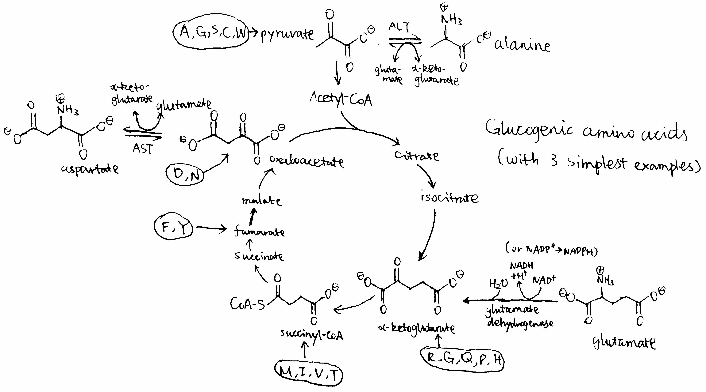
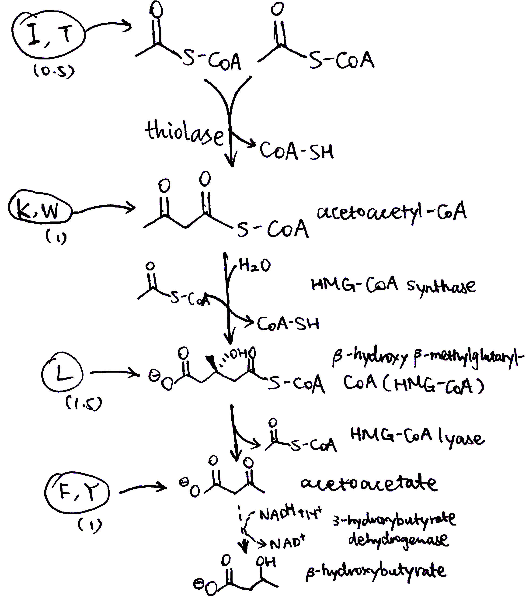
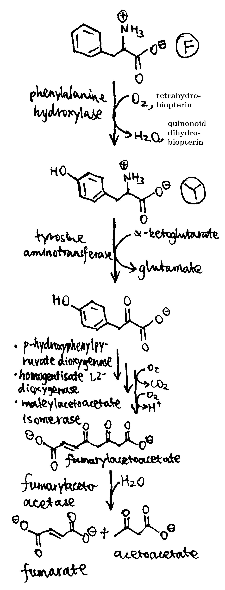
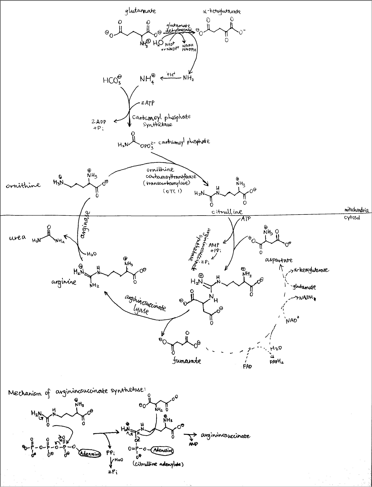
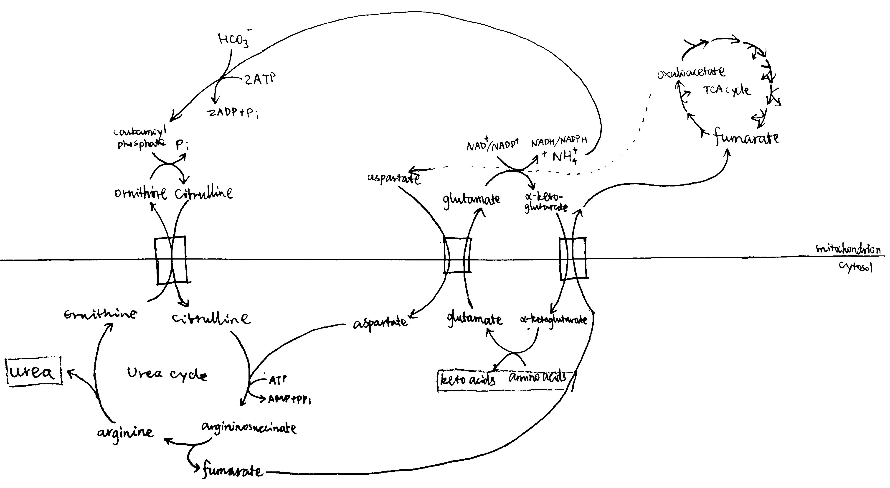

Catabolism of an amino acid produces ammonia (exists as ammonium ion at physiological pH) and a carbon skeleton (α-ketoacid). In humans, ammonia is principally converted to a less toxic, but still soluble product, urea, and excreted. The carbon skeleton, depending on the identity of the amino acid, can be fed into two different fuel molecule-producing pathways (when starved), leading to an anthropocentric (because humans lack the glyoxylate cycle) classification of amino acids:
Catabolism of glucogenic amino acids leads to production of either pyruvate, oxaloacetate, succinyl-CoA, α-ketoglutarate, or fumarate, as shown below. Simplest examples are direct transamination reactions of alanine, aspartate, and dehydrogenation of glutamate, producing pyruvate, oxaloacetate, and α-ketoglutarate, respectively.
The entry points of ketogenic amino acids into the HMG-CoA pathway are shown below. The amount of acetoacetate produced from one unit of each intermediate is indicated in parentheses.
Aromatic amino acids are both glucogenic and ketogenic, and importantly, for each of them, a single catabolic pathway leads to an ketogenic product and an glucogenic product. A notable feature of aromatic amino acid degradation is the use of several oxygenases (monooxygenases and dioxygenases). I used phenylalanine/tyrosine as the example to illustrate this:
Alkaptonuria is caused by mutant homogentisate 1,2-dioxygenase. Accumulation of homogentisate and its oxide, alkapton, results in dark urine and other physiological damages.
Not mentioned in most, if not all textbooks, alkaptonuria was the first disease explained by Mendelian genetics. This study, done by Archibald E. Garrod (M.A., M.D. Oxon), was published in the famous medical journal The Lancet in 1902[1]. (one decade before world war I!)
Unfortunately, the mechanism of heredity was not the focus of medicine at that time, and few biologist would read The Lancet. Garrod's findings and hypotheses were therefore ignored. (the next important experiment in genetics was done by Griffith two decades later, in 1928, but it was not until 1940s did the field of genetics really begin to shine, with studies done by Beadle, Tatum, Luria, Avery et al.)
The reactions of the urea cycle are shown below. The mechanism of argininosuccinate synthesis is not obvious (to me), so I also included this. (mechanisms of other reactions are simple nucleophilic substitutions and eliminations)
The overall reaction is: $$\ce{HCO3^- + NH4^+ + H2O + 3ATP + aspartate -> urea + 2ADP + AMP + 4P_{i} + fumarate}$$ which is equivalent to: $$\ce{CO2 + 2 amino-acids + 4H2O + 4ATP + FAD + NAD+ + NAD+/NADP+}$$ $$\ce{-> urea + 2 keto-acids + 4ADP + 4P_{i} + FADH2 + NADH + NADH/NADPH + 2H+}$$
The diagram shown below verifies that, the production of urea from amino acids, albeit complex, does not result in net consumption or redistribution of 4C and 5C molecules i.e. it does not interfere with other pathways that share common intermediates such as oxaloacetate and fumarate. Transdeamination of two amino acids leads to production of one urea: two amino groups are first transferred onto two α-ketoglutarate (producing glutamate), then one glutamate gives its amino group via ammonia (carbamoyl phosphate), and the other one via oxaloacetate (aspartate), to form urea.  Although glutamate dehydrogenase, carbamoyl phosphate synthetase and ornithine carbamoyltransferase reactions are widely believed to occur in the mitochondrial matrix, there is currently no absolute consensus on where the transamination of general amino acids and convertion of fumarate (formed in the urea cycle) back to glutamate occur, and, if both mitochondrial and cytosolic forms exist, in what proportions and what the physiological significance are. For example, the diagram JS used in his ppt (lec. 11, p. 12) suggests that a cytosolic form of fumarase exist and it participates in the urea cycle, and the diagram also impies that (though not shown) half of the transamination occurs in the cytosol and the other half in the mitochondria (otherwise α-ketoglutarate will accumulate in the cytosol).
In Lehninger's and Voet's Biochemistry, two paths of gluconeogenesis are described, one using mitochondrial PEPCK (PEP carboxykinase) and the other using cytosolic PEPCK. The rationale is that, when lactate is dehydrogenated in the cytosol, an equivalent amount of NADH is produced for the later GAPDH reaction, thus oxaloacetate produced from lactate is directly decarboxylated via mitochondrial PEPCK to produce PEP; conversion of alanine to pyruvate does not produce the NADH, so oxaloacetate is first reduced to malate in mitochondria, then dehydrogenation of malate back to oxaloacetate in the cytosol produces the NADH (then PEP is produced via cytosolic PEPCK).
JS implied that we only need to remember the path with malate as an intermediate (for both alanine and lactate). I talked to him about what I learnt from Lehninger's, and he said yes there can be two paths but generally cytosolic PEPCK is more important in gluconeogenesis, and the mix of two paths is complicated (the rationale given in Lehninger's is not 100% accurate).
Later, I found valuable information in a recent article written by Stark and Guebre-Egziabher [2]: